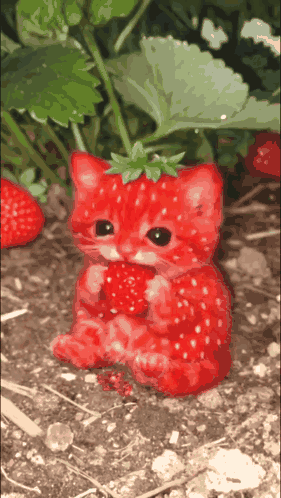
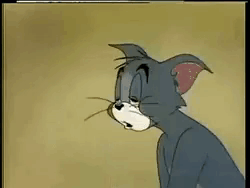

Untuk My very very very biutiful pro max plus Girl
Halo Perempuan yang di Jumat ini terlihat paling cantik di kantor bahkan di dunia
Sassy.
Hmm… kamu masih marah ya?

user
user
sedang mengetik…
Aku nggak pernah keganggu sama kamu.
Aku nggak kesel karena kamu banyak ngomong. Aku justru senang waktu kamu cerita, nanya hal random, atau nge-request apa pun ke aku.
- Kamu ceritaAku diem-diem senyum dengerin.
- Kamu nanya randomPertanyaan paling ngalir pun aku suka.
- Kamu request sesuatuBikin aku merasa dibutuhin.
- Aku merasa bergunaBuat kamu, itu cukup buat aku.
Plisssss bangetttt janjiiii jangan berubah aku pengen kamu kaya kemarin aku seneng bangetttt kalo di gituinnnnn
Dari semalam aku kepikiran terus sampai susah tidur, hehe.
Iya, aku overthinking sendiri karena takut kamu masih marah sama aku. Terus akhirnya aku bikin ini deh.
Dia masih marah nggak ya?
Aduh aku salah…
Gimana cara minta maaf yang lucu ya?
Bikin ini aja deh…

Aku bikin ini khusus buat kamu.
Aku harap hal kecil ini bisa bikin marah kamu sedikit reda, bikin kamu senyum lagi, dan bikin kamu mau maafin aku.
Apology loading…
0%
menyiapkan permintaan maaf…
done
Jadi…
Mau ya?
Maafin user ini.
Yeay…
Makasih ya, kakak cantik. Aku senang banget kamu mau maafin aku. Aku janji bakal lebih hati-hati, lebih peka, dan nggak pura-pura ngambek dengan cara yang bikin kamu sedih lagi.
Kondisi user saat ini